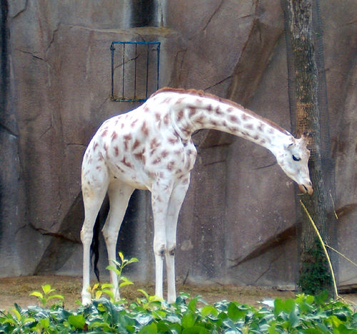
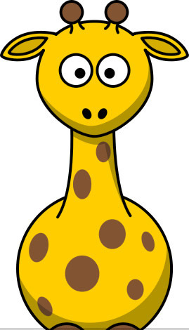
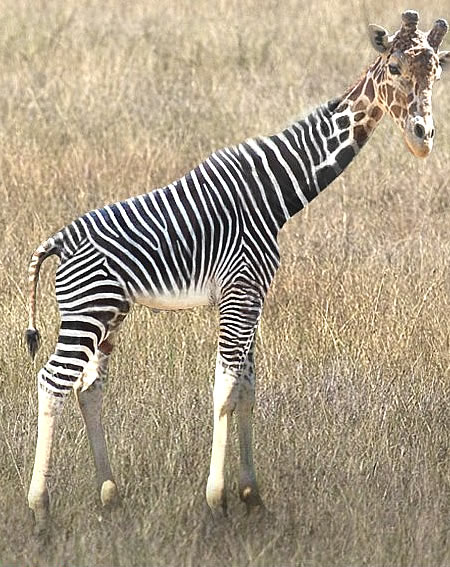
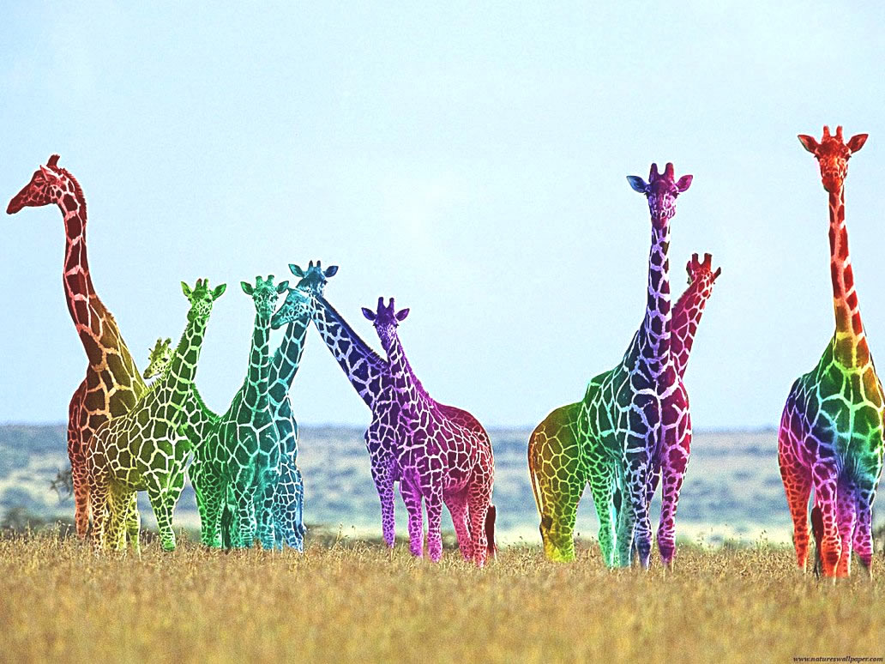

Info
Endangerment
Giraffes are becoming more and more endangered every year due to poaching in the Somalian, African regions. They are hunted for their unique pelts and large amount of meat to which could feed an African family for a year.
Appearance
The giraffe is Africa's tallest mammal, reaching full heights of more than 5 m (16.4 ft). The attractive marking is made up of irregular patches, in varying shades of brown, on a cream or buff background.
Males are larger and darker than females, have thicker horns and have a lump on the forehead. The horn tips are bald in males and old females while hairy in younger females.
Behaviour
Giraffe are most active in the early morning and late afternoon but also feed at night in bright moonlight.
However, unlike many of Africa's wild animals that "disappear" under shady trees during the heat of the day, giraffe continue browsing and because of their size, can be spotted throughout daylight hours.
Giraffe will drink if water is available, but can survive without it. The forelegs are straddled and the knees bent in order to get the head down low enough. While drinking they are very vulnerable and will not drink if suspicious of danger.
Females, calves and juveniles occur in herds of about 10 with only very loose social ties, and a flexible membership. Young males may form small bachelor groups. Mature bulls are nearly always alone, except when they join a female herd for mating. Young males spar by neck wrestling, twisting their necks together and trying to push the opponent off balance.
Reproduction
The giraffe is the only ruminant with gestation longer than a year and a single calf weighing 100kg is born after a gestation of 457days.
Giraffe reach sexual maturity in four to six years. Social bonds between mother and calf persist beyond weaning, until the birth of her next offspring. Calves suffer heavy predation; first year mortality can be over 40%.
Diet
An exclusive browser, the giraffe eats leaves, fresh shoots, flowers, pods, and fruits from trees, of which acacias are the most important source of food.
Leaves are removed from thorny branches by combing them between the teeth. Twigs and branches are pulled into the mouth with the long and dextrous tongue.
Sounds
Giraffe are usually silent. They bellow, grunt or snort when alarmed, as when confronted by lions, and can also moo in distress.
Found on:http://www.wildlife-pictures-online.com/giraffe-information.html
Giraffes Fighting
Giraffe Giving Birth (Viewer Discresion is Advised)
\\
Found in Antarctica (Transferred To Zoo)
 
New Species: Found In The Himalayas